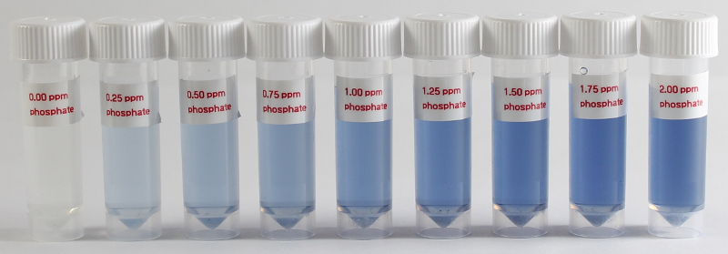

Hach PhosVer3 Reagent¶

For determination of reactive (ortho) phosphate (phosphorus) by the PhosVer® 3 ascorbic acid method. Phosphate results in a blue color which is measured with the colorimeter and an 880nm (IR) led. Recommend using a stir-plate for best results.
Reagents & Equipment¶
- Colorimeter with 880 nm LED (e.g. LED Ver B board)
- Cuvettes
- Stir plate with stir bar
- Small beaker
- 1 mL pipette
- PhosVer3 Hach Part # 21060-69 for 10 mL samples, pack of 100. $31.29. Hach Method 8048 (Ascorbic acid method).
- Distilled water. Optional, for diluting water samples.
Colorimeter set-up¶
- Wavelength: 880nm. Use a custom LED board with 880 nm LED
- Phosphate standard data: download a data file or prepare your own
- Before measuring blank the colorimeter against water or a distilled water sample developed with PhosVer3 reagent as described below
Method¶
- Transfer 10 mL of water sample into a small beaker with stir bar.
- Add the contents of a packet of PhosVer3 to the beaker. Start mixing fairly vigorously.
- You should see a blue color develop between 15-30 seconds.
- After 3 minutes, take the beaker off the stir plate and transfer some to a cuvette for measurement.